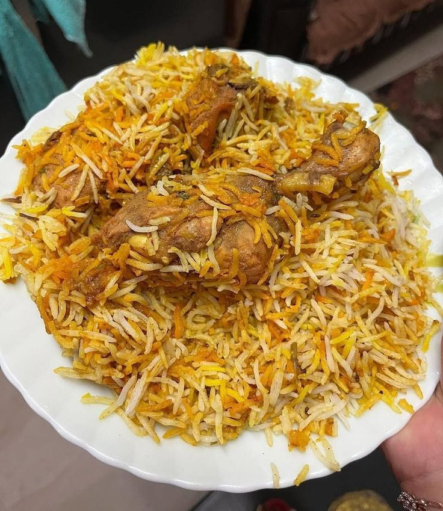

Biryani

Go Back to HOME
Description 📖
To make simple chicken biryani, start by soaking 2 cups of basmati rice for 30 minutes. In a large pot, fry sliced onions in oil until golden, then add 500g chicken with ginger-garlic paste and cook until the chicken changes color. Stir in chopped tomatoes, 2 tablespoons of biryani masala, 1/2 cup yogurt, and salt, cooking for 5-7 minutes. Add 4 cups of water and bring to a boil, then add the drained rice along with whole spices like bay leaf, cardamom, and cloves. Cover the pot, reduce the heat to low, and cook for 15-20 minutes until the rice is tender and the flavors meld together. Garnish with fried onions and serve hot with raita on the side. Enjoy your homemade biryani!
Enjoy! 🍛
INGREDIENTS 🛒
For the Rice
- 2 cups basmati rice
- 4 cups water
- 2-3 bay leaves
- 4-5 green cardamoms
- 4-5 cloves
- 1 cinnamon stick
For the Chicken
- large onion (thinly sliced)
- 2 medium tomatoes (chopped)
- 1 tbsp ginger-garlic paste
- 2 tbsp biryani masala (or garam masala)
- 1/2 cup plain yogurt
- 2-3 reegn chilies (slit, optional)
- Salt to taste
- 3-4 tbsp oil or ghee
For Garnish
- For Garnish
- Fresh coriander leaves (chopped)
- Fresh mint leaves (optional)
Kitchen Tools
- Large pot with tight-fitting lid
- Knife and cutting board
- Measuring cups
Steps to Make Biryani
Step 1: Prep the Rice
- Wash the basmati rice under running water until the water runs clear (2-3 times).
- Soak the rice in water for 30 minutes. Drain and set aside.
Step 2: Cook the Chicken Masala
- Heat oil or ghee in a large pot over medium heat.
- Add sliced onions and fry until golden brown. Remove half for garnish.
- Add ginger-garlic paste and sauté for 1-2 minutes until fragrant.
- Add chicken pieces and cook for 5-7 minutes until they change color.
- Add chopped tomatoes, biryani masala, yogurt, green chilies, and salt.
- Cook for another 5-7 minutes until tomatoes soften and oil separates.
Step 3: Add Water and Rice
- Pour in 4 cups of water and bring to a boil.
- Add the drained rice, bay leaves, cardamom, cloves, and cinnamon stick.
- Stir gently and check salt (the water should be slightly salty).
- Bring to a rolling boil.
Step 4: Cook on Low Heat (Dum)
- Reduce heat to the lowest setting.
- Cover the pot with a tight-fitting lid.
- Cook for 15-20 minutes without opening the lid.
- Turn off the heat and let it rest for 5-10 minutes.
Step 5: Garnish and Serve
- Gently fluff the biryani with a fork.
- Garnish with fried onions, fresh coriander, and mint leaves.
- Serve hot with raita (yogurt dip) or salan (spicy curry).